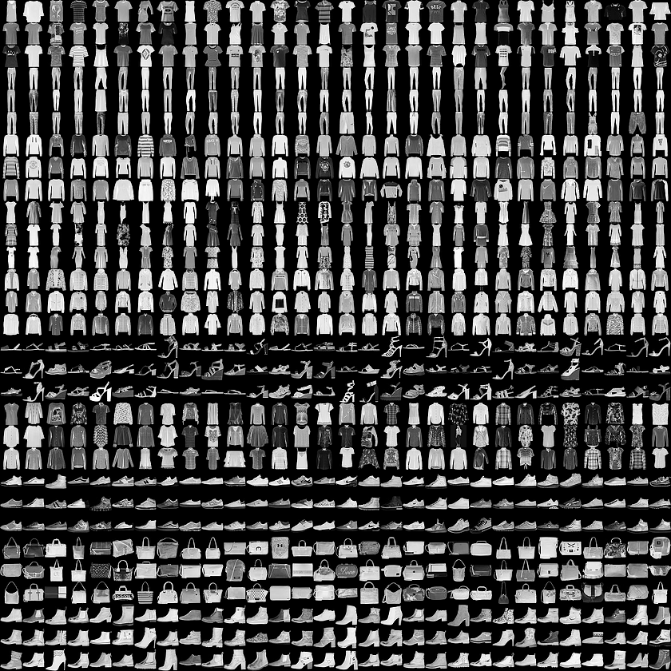

Train a neural network to distinguish between artists given two paintings as input.
"With an original Picasso carrying a 106 million dollar price tag, identifying an authentic work of art from a forgery is a high-stakes industry. While algorithms have gotten good at telling us if a still life is of a basket of apples or a sunflower bouquet, they aren't yet able to tell us with certainty if both paintings are by van Gogh."
(Kaggle, Painter by Numbers)
This represents a step of abstraction from the multiclass classification problem. Instead of differentiating between a series of classes, we want to say, given two images, whether or not they belong in the same class. We accomplish this with a Siamese Convolutional Neural Network (CNN).
A Siamese CNN is built by combining two CNNs (which are often identical), then running some distance metric on their outputs. The two networks independently assess each image to create two feature vectors of the same dimension. By calculating the similarity of the two outputted feature vecotrs, we can get a sense of the similarity of the respective inputs.
After running into GPU memory limitations, among other frustrations with the original painting dataset (the training file we generated included 11.7 million pairs of paintings from the original 79,000 paintin dataset), we decided to affirm a proof of concept with the fashion-mnist dataset, shown at a glimpse below. This smaller dataset includes 28x28 pixel greyscale images of ten different articles of clothing. With a smaller dataset, we could more rapidly iterate through the process of constructing a siamese CNN before proceeding to the painting dataset.
With the smaller dataset, we were rapidly able to achieve 87% accuracy with a small siamese CNN run over a single epoch training on a set of ~120,000 pairs made from the 60,000 images (architecture given below).
SUBNET ARCHITECTURE
_________________________________________________________________
Layer (type) Output Shape Param #
=================================================================
conv2d_1 (Conv2D) (None, 28, 28, 16) 416
_________________________________________________________________
max_pooling2d_1 (MaxPooling2D) (None, 14, 14, 16) 0
_________________________________________________________________
conv2d_2 (Conv2D) (None, 14, 14, 16) 6416
_________________________________________________________________
max_pooling2d_2 (MaxPooling2D) (None, 7, 7, 16) 0
_________________________________________________________________
conv2d_3 (Conv2D) (None, 5, 5, 32) 4640
_________________________________________________________________
max_pooling2d_3 (MaxPooling2D) (None, 2, 2, 32) 0
_________________________________________________________________
flatten_1 (Flatten) (None, 128) 0
_________________________________________________________________
dense_1 (Dense) (None,64) 8256
_________________________________________________________________
dense_2 (Dense) (None, 10) 650
=================================================================
Total params: 20,378
Trainable params: 20,378
Non-trainable params: 0
SIAMESE ARCHITECTURE
__________________________________________________________________________________________________
Layer (type) Output Shape Param # Connected to
==================================================================================================
input_1 (InputLayer) (None, 28, 28, 1) 0
__________________________________________________________________________________________________
input_2 (InputLayer) (None, 28, 28, 1) 0
__________________________________________________________________________________________________
sequential_1 (Sequential) (None, 10) 20378 input_1[0][0] input_2[0][0]
__________________________________________________________________________________________________
lambda_1 (Lambda) (None, 1) 0 sequential_1[1][0] sequential_1[2][0]
==================================================================================================
Total params: 20,378
Trainable params: 20,378
Non-trainable params: 0
__________________________________________________________________________________________________